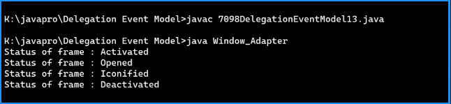

Java Program to Close the Frame using WindowAdapter Class
Code:-
import javax.swing.*;
import java.awt.*;
import java.awt.event.*;
class Window_Adapter extends WindowAdapter
{
static JFrame frame;
public static void main(String args[])
{
frame=new JFrame("Window Adapter Class");
frame.setBackground(Color.white);
frame.setSize(500,500);
Window_Adapter obj=new Window_Adapter();
frame.addWindowListener(obj);
frame.setVisible(true);
}
@Override
public void windowClosing(WindowEvent e)
{
System.out.println("Status of frame : Closing");
windowClosed(e);
}
@Override
public void windowClosed(WindowEvent e)
{
frame.dispose();
}
@Override
public void windowIconified(WindowEvent e)
{
System.out.println("Status of frame : Iconified");
}
@Override
public void windowDeiconified(WindowEvent e)
{
System.out.println("Status of frame : Deiconfied");
}
@Override
public void windowActivated(WindowEvent e)
{
System.out.println("Status of frame : Activated");
}
@Override
public void windowDeactivated(WindowEvent e)
{
System.out.println("Status of frame : Deactivated");
}
@Override
public void windowOpened(WindowEvent e)
{
System.out.println("Status of frame : Opened");
}
}
Output:-
